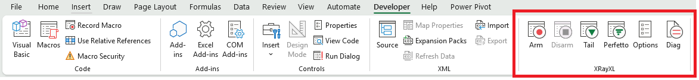
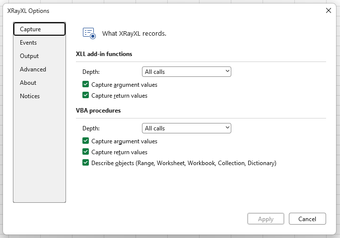
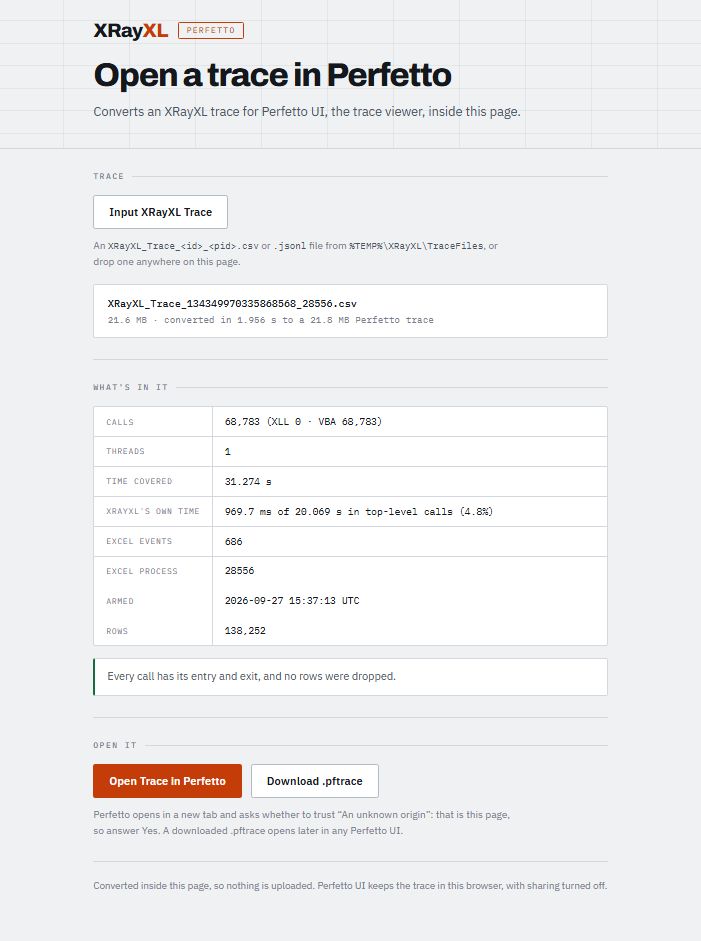

XRayXL — Demo
Ten workbooks that tour XRayXL a feature at a time. Each one tells you, on the sheet, what to press and what to look for in the trace. This page walks through the same tour with real rows from a real run.
64-bit Excel required. XRayXL traces 64-bit Excel only.
What's in here
dist/
demo/
01_FirstTrace.xlsm - VBA and XLL functions in one recalculation, and how to read a row.
02_Values.xlsm - Ranges, arrays, Variants and their types.
03_Callers.xlsm - What started each call: a cell, an array formula, an event, a button, a timer.
04_Errors.xlsm - How calls end: threw, unwound, handled and unhandled, and error values.
05_VBACurves.xlsm - A real VBA model, a yield-curve bootstrap, traced end to end.
06_Objects.xlsm - A class module's members, and a Range, Worksheet and Workbook as arguments.
07_CallTree.xlsm - Recursion, a ByRef argument changing, and End.
08_Threads.xlsm - A thread-safe XLL on several calculation threads, and VBA on one.
09_XLLPricing.xlsm - An option book built from XLL functions: text, ranges, arrays and references.
10_Plasma.xlsm - A plasma painted two ways, cell by cell and in one call, to read in Perfetto.
DemoBehaviors64.xll - A demo add-in: ReverseText, MakeSeries, MightDivide, SafeDivide, ThreadSafeSquare,
CallCounter.
DemoFinance64.xll - A demo add-in: BlackScholes, PresentValue, CompoundReturn, SlowSum, Fibonacci,
NetPresentValue, DiscountCurve, WeightedAverage, RangeSize, QuoteLookup.
docs/ - This walkthrough and the other guides, to open in a browser.
LICENSE - The licence: GPL-3.0.
MANIFEST.txt - The version, tag, commit and SHA256 of every file here.
THIRD-PARTY-NOTICES.txt - The licences of the third-party code in XRayXL.
XRayXL-Perfetto.html - Send your trace file to Perfetto.
XRayXL64.xll - The add-in.
The two demo add-ins are ordinary XLLs that know nothing of XRayXL. They are what you point the tracer at.
Setting up
- Load the add-ins. Use File ▸ Open on
XRayXL64.xll— indist\of a clone, or where you extracted the zip — then onDemoFinance64.xllandDemoBehaviors64.xllindemo\beside it. Opening an.xllloads it for this Excel session. To load them every time Excel starts, add them through File ▸ Options ▸ Add-ins ▸ Manage: Excel Add-ins ▸ Go ▸ Browse instead. - Show the Developer tab if it is hidden: File ▸ Options ▸ Customize Ribbon, and tick Developer. XRayXL's group is on that tab.
- Open a workbook and enable macros.
The XRayXL group on the Developer tab has six buttons:

Disarm is greyed until a recording is running, and Perfetto until one has finished.
| Button | What it does |
|---|---|
| Arm | Starts a recording. Every XLL function and VBA procedure that runs from now on writes rows to a new trace file |
| Disarm | Stops the recording and closes the file |
| Tail | Opens PowerShell on the trace file and shows each row as it is written. Live from the first arm |
| Perfetto | Shows the last trace on a timeline, in Perfetto UI in your browser. Live after Disarm. See On a timeline |
| Options | The settings: what to capture, where the trace goes and in what format, the buffer and the log |
| Diag | Diagnostics: what is loaded into this Excel: its modules and their versions, the environment and the process. Read-only |
The buttons appear once a workbook is open. Expect your antivirus to take an interest in
XRayXL64.xll: it hooks Excel's internals, which is what it is for.
The loop
Every demo is the same four steps:
- Arm.
- Do the thing the sheet says: recalculate, edit a cell, or press a button.
- Disarm.
- Read the trace. Open Options ▸ Output, right-click Trace file and choose Reveal in File Explorer. It is a CSV, so Excel opens it. Or press Perfetto to see it on a timeline.
To watch rows arrive while you work, press Tail on the ribbon after step 1.
Traces are written to %TEMP%\XRayXL\TraceFiles\, one file per arm, named
XRayXL_Trace_<id>_<pid>.csv. XRayXL writes nothing to your workbook: no cells, no
VBA, no names.
01 — Your first trace
Try it: Arm, press Ctrl+Alt+F9 to recalculate everything, then Disarm.
Five cells: two VBA functions and three XLL functions from DemoFinance.
| Cell | Formula | What it is |
|---|---|---|
| B11 | =RiskWeighted(1000000,3) |
VBA, calling a VBA helper WeightFor |
| B12 | =OptionBook(100) |
VBA, calling the XLL BlackScholes through Application.Run |
| B13 | =BlackScholes(100,100,1,0.05,0.2) |
XLL |
| B14 | =SlowSum(2,3) |
a deliberately slow XLL |
| B15 | =Fibonacci(30) |
a busy XLL |
The trace has fourteen rows. Here they are with the most useful columns:
seq kind source span parent depth function callerref args ret ticks
1 entry XLL 1 0 1 BlackScholes ...!B13 a1:B=100 a2:B=100 a3:B=1 a4:B=0.05 a5:B=0.2
2 exit XLL 1 0 1 BlackScholes 10.4505835721856 477
3 entry XLL 2 0 1 Fibonacci ...!B15 a1:B=30
4 exit XLL 2 0 1 Fibonacci 832040 34952
5 entry VBA 3 0 1 OptionBook ...!B12 a1:Double=100
6 entry XLL 4 0 1 BlackScholes ...!B12 a1:B=100 a2:B=100 a3:B=1 a4:B=0.05 a5:B=0.2
7 exit XLL 4 0 1 BlackScholes 10.4505835721856 162
8 exit VBA 3 0 1 OptionBook 1045.05835721856 2815
9 entry XLL 5 0 1 SlowSum ...!B14 a1:B=2 a2:B=3
10 exit XLL 5 0 1 SlowSum 5 432132
11 entry VBA 6 0 1 RiskWeighted ...!B11 a1:Double=1000000 a2:Long=3
12 entry VBA 7 6 2 WeightFor ...!B11 a1:Long=3
13 exit VBA 7 6 2 WeightFor 1 243
14 exit VBA 6 0 1 RiskWeighted 1000000 742
... stands for '[01_FirstTrace.xlsm]First trace'. Your ticks will differ.
Reading a row
Every call writes two rows: an entry when it starts and an exit when it ends. The two share a span number, which is how you pair them.
| Column | Says |
|---|---|
kind |
entry or exit |
source |
XLL for an add-in function, VBA for a VBA procedure |
span |
this call's number. Its entry and exit rows share it |
parent, depth |
where the call sits: parent is the span of the call that made it, 0 at the top |
module, function |
the add-in file or VBA module, and the function's name |
typetext |
the parameter types: the XLL's registration codes (B is a number), or VBA's declared types |
caller, callerref |
what started the call. Here every caller is a cell, and callerref is its address |
args |
on the entry row, the values going in, each as aN:type=value: a1 is the first argument (on VBA rows N counts frame slots, so it can skip; see the row model) |
ret, rettype |
on the exit row, the value that came back and its type |
outcome |
how it ended. Everything here returned. Demo 04 shows the rest |
ticks |
how long it took, in QueryPerformanceCounter ticks. On most machines that is 10,000 to a millisecond |
trust |
whether ticks is exact (exit) or an upper bound. See demo 04 |
The full list is in the row model.
What to notice
- Nesting.
WeightForhasparent=6anddepth=2: it was called byRiskWeighted, span 6. - VBA calling an XLL.
OptionBook'sBlackScholescall (rows 6 and 7) falls between OptionBook's entry and exit, and carries the samecallerref, B12. It readsdepth=1andparent=0, because each source counts its own depth: an XLL function is the first XLL call on the stack, whatever VBA is running above it. Its place under OptionBook shows in the order of the rows. - Where the time went.
SlowSumtook 432,132 ticks, about 43 ms, more than everything else put together.Fibonacci(30)took about 3.5 ms. Thetickscolumn is where to look first for a slow sheet. - Order. Rows appear in the order Excel calculated the cells, which is not the order on the sheet.
The Options dialog
Open Options from the ribbon:

| Page | What is on it |
|---|---|
| Capture | For XLL and VBA separately: the depth (off, the top-level call only, or everything), whether to capture argument and return values, and for VBA whether to describe objects such as a Range |
| Events | Which of Excel's own events to record, each with its own tick box, or a preset: None, Calc, Selection, Calc & Selection, All. Calc is the default. Demo 03 shows them |
| Output | The format (CSV or JSON Lines), the output folder, and the current trace file |
| Advanced | The buffer between Excel and the file, what to do when it fills, and the log level and log file |
| About, Notices | The version, the build time and commit, the licence and third-party notices |
Settings are read when a recording starts, so they are locked while you are armed. Everything is on by default. To get the most accurate timings, turn off argument and return values: capturing them is work done inside the call being timed.
On a timeline
After Disarm, press Perfetto. Your browser opens XRayXL-Perfetto.html, the page
that sits beside XRayXL64.xll, and it has already read the trace: it shows how many
calls, threads and errors it holds, and anything to watch for, such as dropped rows.
Press Open Trace in Perfetto. Perfetto opens in a new tab and asks whether to trust
"An unknown origin". That is the page, so answer Yes.

In Perfetto (demo 10 has a picture of it):
- Each thread is a track, and each call is a bar, as long as the call took,
under the call that made it.
WeightForsits underRiskWeighted. OptionBook'sBlackScholessits underOptionBook, which the rows could only show by their order. - Click a bar for its row's details: the arguments, the result,
outcome,ticks, and two times worked out from them. XRayXL time is what the tracer itself spent inside the call: reading arguments, asking for the calling cell, writing rows. Own time is the rest, which is what the call would have taken with nothing watching. - The page's summary adds up XRayXL's time over the top-level calls, so you can see how much the recording cost. It is highest for many small VBA functions with argument and return values on.
- Excel's events, and the arm and disarm, are markers on the thread that raised them.
- Nothing is uploaded. The page converts the trace on your machine, and Perfetto keeps it in your browser, with sharing turned off.
Opened on its own, the same page takes any trace file, CSV or JSON Lines: press Input XRayXL Trace, or drop the file on it. That is also the way for a trace over 256 MB, which the button refuses.
02 — Arguments and values
Try it: Arm, press Ctrl+Alt+F9, then Disarm.
This workbook is about the args and ret columns: how a range, an array or a Variant is
written, so that you can read it back.
function args / ret
CellCount a1:Variant=Range@0x23E81224570([02_Values.xlsm]Values!B23:D25)=Variant[1..3,1..3]{{1.5,"text",TRUE},{42,#N/A,Empty},{-2.25,"more",46284}}
MixedTypes ret Variant[0..6]{Integer(1),2.5,Long(3),Currency(1.5000),Date(46284),"text",TRUE}
TimesTable ret Long[1..3,1..3]{{1,2,3},{2,4,6},{3,6,9}}
Total a1:Ref&=Double[1..5]{1,4,9,16,25}
MakeSeries ret Variant[1..1,1..4]{{1,4,9,16}}
The grammar
An array is written as its element type, its bounds, then its values:
Long[1..3,1..3]{{1,2,3},{2,4,6},{3,6,9}}
^ ^ ^
| | the values: one brace level per dimension, row 1 first
| the bounds of each dimension, as declared (1..3, 0..6, ...)
the element type
- A 2-D array is written row by row.
{{1,2,3},{2,4,6},{3,6,9}}is row 1, then row 2, then row 3. - A range reads
Range@<address in memory>(<the range's address>)=followed by its cells as aVariantarray:CellCountreceivedB23:D25, three rows of three. The blank cell readsEmpty, and the#N/Acell reads#N/A. - Numbers in a Variant. A
Doubleis written bare (2.5). Every other type names itself:Integer(1),Long(3),Currency(1.5000),Date(46284), where 46284 is Excel's serial number for 19 September 2026. Booleans areTRUE/FALSE. - Text is always in quotes, so a number and text that look alike never read the
same:
Integer(1)is the number 1 and"1"is the text,#N/Ais Excel's error and"#N/A"is text,Emptyis an empty Variant and""an empty string. A quote or a backslash inside the text is escaped as\"or\\, and a character outside plain ASCII as\uNNNN. - In the file itself the quotes are doubled, because that is how CSV writes a quote
inside a field:
a1:Variant="1"is stored as"a1:Variant=""1""". Excel, and anything else that reads CSV, shows it asa1:Variant="1". - In a typed array such as
Long[...], the elements are bare, because the header already says what they are. - An XLL array reads like a VBA one.
MakeSeries(4)returned one row of four values,Variant[1..1,1..4].
There is no truncation: every element is written. The one limit is a single value whose text would pass 4 MB. It is written as its header alone, and the log counts it at disarm.
Declared or recognised
Total's argument reads a1:Ref&=..., where you might have expected a1:Double().
SumOfSquares passes its array to Total(ByRef squares() As Double), and the compiled
VBA says only "a reference to eight bytes" for that parameter: Ref&. The tracer then
recognised the array from its own descriptor, which names its element type (Double)
and bounds (1..5).
A type after a1: is declared when VBA's compiled code names it, and recognised
when the tracer worked it out from the value itself, under strict checks. Most of the time
XRayXL finds a parameter's type: every argument in demo 05's recalculation has one. A ?
marks the rare one it could not. How XRayXL knows a VBA argument's
type explains each form.
03 — Who called it
Try it: Arm, then in turn:
- Press Ctrl+Alt+F9.
- Type a number into the blue Trigger cell.
- Press Run a macro.
- Press Start a timer and wait a second.
Then Disarm.
The caller and callerref columns say what started each call:
function caller callerref parent depth
ThreeOf cell [03_Callers.xlsm]Callers!B12:D12 0 1
Twice cell [03_Callers.xlsm]Callers!B11 0 1
CallCounter cell [03_Callers.xlsm]Callers!B13 0 1 <- the recalculation
CallCounter cell [03_Callers.xlsm]Callers!B13 0 1 <- again, after the edit
Worksheet_Change none ref 0 1
Helper none ref 5 2
FromTheButton name RunAMacro 0 1
Helper name RunAMacro 7 2
StartTimer name StartATimer 0 1
TimerTick none ref 0 1
Helper none ref 10 2
| What started it | caller |
callerref |
|---|---|---|
| A formula in one cell | cell |
the cell, ...!B11 |
| An array formula over several cells | cell |
the whole range, ...!B12:D12 |
| A button or shape | name |
the button's name, RunAMacro |
An event, or a macro run by Application.OnTime |
none |
ref: Excel reported no calling cell |
What to notice:
- The array formula
{=ThreeOf(5)}over B12:D12 runs once, and its caller is the whole range. CallCounteris volatile, so it runs whenever anything recalculates. Editing the Trigger cell caused the second call, and nothing it depends on changed.Worksheet_Changeis VBA run by an event, not by a calculation. Its argument shows the cell you edited:a1:Object=Range@...([03_Callers.xlsm]Callers!B14)=5.- The timer.
StartTimerran from the button, andTimerTickran a second later, run by Excel itself with no button and no cell behind it. The trace records both, as separate top-level calls. Helperis the same procedure called from three places. Itsparentsays which one called it each time, and itsa1:Stringargument says so too.
Excel's own events
Between the calls, the trace also records the events Excel raises, one event row
each. These are the rows from the recalculation and the edit, with the first calls left
out:
seq kind source function callerref args
1 event XRayXL arm qpcFrequency=10000000 utc="2026-09-27T10:04:45.5364303Z" pid=5976 XLL_DEPTH="ALL" ...
6 entry XLL CallCounter ...!B13
7 exit XLL CallCounter
8 event Excel SheetCalculate [03_Callers.xlsm]Callers Sh:Object=Worksheet@0x27B83E35C80([03_Callers.xlsm]Callers)
9 event Excel AfterCalculate
10 entry XLL CallCounter ...!B13 <- the edit's recalculation
11 exit XLL CallCounter
12 event Excel SheetCalculate [03_Callers.xlsm]Callers Sh:Object=Worksheet@0x27B83E35C80(...)
13 event Excel AfterCalculate
14 entry VBA Worksheet_Change ref a1:Object=Range@0x27B83E34FB0([03_Callers.xlsm]Callers!B14)=7
15 entry VBA Helper ref a1:String="change event"
16 exit VBA Helper
17 exit VBA Worksheet_Change
18 event Excel SheetChange [03_Callers.xlsm]Callers!B14 Sh:Object=Worksheet@0x27B83E35C80(...) Target:Range=Range@0x27B83E34FB0([03_Callers.xlsm]Callers!B14)=7
19 event XRayXL disarm rowsDropped=0 pauses=0 ... eventsRecorded=5 eventsLost=0
- An event is not a call. It has one row, not two, and its
span,parentanddepthare0.callerrefis the most specific place it names: the sheet forSheetCalculate, the edited cell forSheetChange.argsnames each parameter, andTargetcarries the new value,7. - The order is Excel's. Typing into B14 reads
SheetCalculate,AfterCalculate, and only then the change: Excel recalculates before it tells anyone a cell changed. The sheet's ownWorksheet_Changehandler runs before the application hears of it, so its rows come beforeSheetChange. Both saw the sameRange, at the same address. - Arm and disarm are events too. The
armrow lists every setting in force, and thedisarmrow the session's totals. - Which events is the Events page in Options. The default, Calc, is these
three and the other calculation events, such as a table or PivotTable updating.
Selection is where you are and what you click:
SheetSelectionChange, activating a sheet, workbook or window, double- and right-clicks, and following a hyperlink. All records everything Excel'sApplicationobject raises. Events that fire often are marked ⚡.
In Perfetto, events are markers on the thread that raised them, among the calls.
04 — Errors and how calls end
Try it: Arm, press Ctrl+Alt+F9, press Run the error chain, then Disarm.
The outcome column says how each call ended: returned, threw, unwound, handled,
unhandled or abandoned. ErrorsInTheTrace.md explains each one, and the cases
where VBA stops at its error dialog instead of passing an error on.
An error passed up a chain
Run the error chain runs Outer, which calls Middle, which calls Thrower.
Thrower raises an error, Middle does not catch it, and Outer does:
function span parent depth ret outcome trust
RunErrorChain 9 0 1 returned exit
Outer 10 9 2 handled exit
Middle 11 10 3 unwound backstop
Thrower 12 11 4 threw backstop
(Exit rows, reordered to show the chain.) Read it from the bottom up:
threw: the error was raised here and left this procedure.unwound: the error passed through, and nothing here caught it.handled: an error from below was caught here, and this procedure carried on.
trust=backstop means the procedure left without running its normal exit, so the
tracer closed it at the next thing it saw. The ticks on such a row is an upper bound,
not an exact reading.
Errors in worksheet functions
function args ret outcome
SafeRatio a1:Double=1 a2:Double=0 "n/a" handled
Divide a1:Double=1 a2:Double=0 threw
RawRatio a1:Double=1 a2:Double=0 unhandled
Divide a1:Double=1 a2:Double=0 threw
CodeFor a1:String="GBP" #N/A returned
Scaled a1:Double=10 a2:Variant=Missing 10 returned
MightDivide a1:B=10 a2:B=0 #DIV/0! returned
SafeDivide a1:B=10 a2:B=0 0 returned
handledorunhandled.SafeRatiohas anOn Errorhandler, so it readshandledand returns"n/a".RawRatiohas none. The error leaves VBA into the cell, Excel shows#VALUE!, and the function readsunhandled. In both casesDividereadsthrew, so you can see where the error started.- An error value is not an error.
CodeFor("GBP")returnsCVErr(xlErrNA). Nothing was raised, so it readsreturned, with#N/Ainret. An XLL returning#DIV/0!is the same. Missing.Scaled(10)leaves out itsOptionalsecond argument, and the trace says so:a2:Variant=Missing.
05 — A real model: VBACurves
05_VBACurves.xlsm is a working VBA model rather than a demo sheet: a USD SOFR curve
bootstrapped from deposits, futures and swaps on Market Data, and zero rates,
forward rates and a chart on Curve Analytics. It is one module of ordinary VBA, with
no add-in calls.
Try it: Arm, press Ctrl+Alt+F9, then Disarm.
One full recalculation is about 5,350 calls: 10,710 rows, 3.3 MB of CSV. The busiest functions:
calls function
973 InterpDF
969 CurveDF
852 Demo_AddMonths
776 Demo_YearFrac
776 Demo_BasisCode
224 HandleToIndex
Finding your way around
Filter on
depth=1to see just the cells. Each is a worksheet function Excel called, and everything beneath it is what that function did.Follow a span. The whole curve is built by one cell,
Market Data!B72:span parent depth function ret 531 0 1 Demo_BuildCurve "CRV:USD-SOFR-OIS:1" (ticks 175524, about 18 ms) 532 531 2 LoadInstruments 533 531 2 BootstrapCash 539 531 2 BootstrapFutures 540 539 3 InterpDF 548 531 2 BootstrapSwaps 609 531 2 FindCurveFilter
parenton 531 to see its direct calls.A range, row by row.
Demo_BuildCurve's fourth argument is the instrument table:a4:Object=Range@0x28487BFC100('[05_VBACurves.xlsm]Market Data'!A50:G69)=Variant[1..20,1..7]{{"DEPO","ON",46280,46281,0.00277777777777778,0.03865,"Y"},{"DEPO","1W",...LoadInstrumentspasses it on and hands back the rows markedYthrough aByRefargument. Its exit row shows that argument changing,a2:Variant&=Variant[1..20,1..6]{...}. An exit row carriesargsonly for aByRefargument that changed.
The same trace as JSON Lines
Open Options ▸ Output, set Format to JSON Lines, then Arm, recalculate and
Disarm again. The file is now XRayXL_Trace_<id>_<pid>.jsonl, one JSON object per line,
with the same fields as the CSV columns:
{"seq":1,"input":1,"kind":"entry","source":"VBA","span":1,"parent":0,"depth":1,"thread":49172,"qpc":3981638123735,"module":"[05_VBACurves.xlsm]Module1","function":"Demo_TenorNum","proc":"0x18A81C414BC","typetext":"String","caller":"cell","callerref":"'[05_VBACurves.xlsm]Market Data'!C25","argcount":1,"args":[{"slot":1,"type":"String","value":{"t":"String","v":"6M"}}]}
{"seq":4,"input":4,"kind":"exit","source":"VBA","span":1,"parent":0,"depth":1,"thread":49172,"qpc":3981638124839,"module":"[05_VBACurves.xlsm]Module1","function":"Demo_TenorNum","proc":"0x18A81C414BC","ret":{"t":"Long","v":6},"rettype":"Long","outcome":"returned","ticks":1104,"trust":"exit"}
Every value is structured and names its type, including a Double. An array keeps its
element type and bounds, and its values are nested one list per dimension:
{"slot":1,"type":"Ref&","value":{"t":"Array","elem":"Double","bounds":[[0,400]],"v":[0,0.0191780821917808,0.0876712328767123,...]}}
That makes JSON Lines the format to choose when a program will read the trace. The price is size: this recalculation is 5.8 MB as JSON Lines, against 3.3 MB of CSV. JSON Lines has the full schema. Set the format back to CSV when you are done.
06 — Objects and classes
Try it: Arm, press Ctrl+Alt+F9, press Describe the objects, then Disarm.
PositionValue(100,2.5) creates a Position from a class module, sets its quantity,
values it and lets it go. Every class member is a call of its own:
span parent depth module function args ret
1 0 1 [06_Objects.xlsm]Objects PositionValue a1:Double=100 a2:Double=2.5
2 1 2 [06_Objects.xlsm]Position Class_Initialize
3 1 2 [06_Objects.xlsm]Position Qty a1:Double=100
4 1 2 [06_Objects.xlsm]Position Value a1:Double=2.5 250
...PositionValue's exit row, ret 250...
5 0 1 [06_Objects.xlsm]Position Class_Terminate
NewrunsClass_Initializeinside the procedure that saidNew:parent=1.- A property is a call.
p.Qty = unitsis theProperty Let Qty, with its value asa1. Class_Terminatecomes after PositionValue's exit row, at depth 1. VBA releases the object once the function has finished, so the destructor is not nested under it.
Excel objects as arguments. With Describe objects on (Options ▸ Capture, the default), an object argument is named and, for a Range, Worksheet, Workbook, Collection or Dictionary, described:
RangeInfo a1:Object=Range@0x228072FDBE0([06_Objects.xlsm]Objects!B17:C18)=Variant[1..2,1..2]{{1.5,"a"},{2.5,"b"}}
Describe a1:Object=Worksheet@0x2280464D740([06_Objects.xlsm]Objects)
Describe a1:Object=Workbook@0x2280464A040([06_Objects.xlsm])
Describe a1:Object=Collection@0x2281D2B2EF0=Variant[1..2]{"a",Long(2)}
FirstDataCell ret Range@0x228072FBD20([06_Objects.xlsm]Objects!B17)=1.5
The class comes from the object itself, so a parameter declared As Object still reads
Worksheet. A Range shows its address and then its cells, and a single cell is a plain
value. A Collection shows its items as a 1-D array; a Dictionary would show one {key,item}
row per entry, as a 2-D array. The address after @ lets you
follow one object from row to row. Turning Describe objects off leaves only
object@0x…, which also stops the tracer asking Excel anything during the call.
07 — The call tree
Try it: Arm, press Ctrl+Alt+F9, press Stop everything, then Disarm.
Recursion. Factorial(5) calls itself four times. Each call gets its own span, and
parent points to the call above it:
span parent depth args ret
12 0 1 a1:Long=5 120
13 12 2 a1:Long=4 24
14 13 3 a1:Long=3 6
15 14 4 a1:Long=2 2
16 15 5 a1:Long=1 1
Branching. VbaFib(4) makes nine calls. Two of them run at depth 3 with different
parents, so depth alone cannot tell you which call made which, but parent can:
span parent depth args
3 0 1 a1:Long=4
4 3 2 a1:Long=3
5 4 3 a1:Long=2
6 5 4 a1:Long=1
7 5 4 a1:Long=0
8 4 3 a1:Long=1
9 3 2 a1:Long=2
10 9 3 a1:Long=1
11 9 3 a1:Long=0
A ByRef argument that changed. Clamped(150) passes a variable ByRef to
ClampInPlace, which caps it at 100. The exit row carries the argument again, because
it changed:
kind function args
entry ClampInPlace a1:Double&=150 a2:Double=0 a3:Double=100
exit ClampInPlace a1:Double&=100
Double& means "a Double, passed by reference". Clamped(50) makes the same call,
and its exit row has no args, because nothing changed. An exit row only lists ByRef
arguments that moved.
End. Stop everything runs StopEverything → Level1 → Level2, which says
End. All VBA stops at once and no procedure returns, so all three read
outcome abandoned, trust end.
08 — Threads
Try it: Check that File ▸ Options ▸ Advanced ▸ Formulas ▸ Enable multi-threaded calculation is ticked. Then Arm, press Ctrl+Alt+F9, and Disarm.
Columns D and E each hold 500 formulas. ThreadSafeSquare is registered thread-safe
(rettype Q$, the $), so Excel spreads it across its calculation threads. VbaSquare
is VBA, which Excel always runs on its main thread. Counting entry rows by thread:
calls function thread
43 ThreadSafeSquare 36940
43 ThreadSafeSquare 57248
... ten more threads, 31 to 44 calls each
500 VbaSquare 57008
1 ReverseText 57008
That was twelve threads, the setting on this machine. ReverseText is not thread-safe,
so it ran on the main thread with the VBA. It also shows an XLL string going both ways:
typetext C%, a1:C%="hello", ret "olleh".
On a multi-threaded recalculation, rows from different threads interleave in the file.
The thread column separates them, and span still pairs each entry with its exit.
09 — An option book, all XLL
Try it: Arm, press Ctrl+Alt+F9, then Disarm.
A small priced portfolio with no VBA at all: quotes, ten option positions, portfolio figures, a discount curve and a price grid. It is 45 XLL calls, and each argument type reads differently:
| Formula | Registered | In the trace |
|---|---|---|
=QuoteLookup(A20,Quotes) |
QC%Q |
a1:C%="ACME" a2:Q=Variant[1..5,1..2]{{"ACME",102.5},{"BOLT",48.2},...}: the text, then the whole quotes table as values |
=BlackScholes(F20,B20,C20,Rate,D20) |
QBBBBB |
a1:B=102.5 a2:B=100 ...: five numbers |
=WeightedAverage(G20:G28,E20:E28) |
QK%K% |
a1:K%=Double[1..9,1..1]{{12.0999...},...} a2:K%=Double[1..9,1..1]{{10},{-5},{20},...}: plain arrays of doubles |
=RangeSize(A20:H29) |
QU |
a1:U=SRef(R20C1:R29C8): a reference, named and deliberately not read; ret 80 |
=NetPresentValue(Rate,B37:F37) |
QBQ |
a1:B=0.05 a2:Q=Variant[1..1,1..5]{{100,100,100,100,1100}} |
=DiscountCurve(Rate,B40:B44) |
QBQ |
ret Variant[1..5,1..1]{{0.9759...},{0.9523...},...}: a column in, a column out |
What to notice:
- The call that isn't there. Row 29's ticker,
ZZZZ, is not quoted, soQuoteLookupreturns#N/A. Excel then never callsBlackScholesfor that row, because its argument is an error. You get 29 BlackScholes calls, not 30, and none hascallerref …!G29. The trace records what Excel did, not what the sheet might suggest. - Calculation order. A position's
BlackScholesusually comes straight after itsQuoteLookup, with the grid's independent cells slotted in between.WeightedAverage, which needs every price, comes last. - A nested formula is two calls, one after the other.
B35holds=PresentValue(CompoundReturn(1000,0.07,10),Rate,10). Both calls readdepth 1andcallerref …!B35.CompoundReturnfinishes, returning1967.15135728957, beforePresentValuestarts and receives that number asa1. Excel works out the inner function first, so the two never nest. - Every XLL exit reads
returned, the#N/Aone included. A returned error value is a result, as in demo 04.
10 — A plasma, painted two ways
Try it: Arm, press Start the show and watch for 20 seconds, then Disarm and press Perfetto.
Every cell on this sheet is 10 pixels square, and the 96 × 54 block in the middle is a canvas. The show draws a plasma on it, four sine waves added together with the colours cycling, for two acts of ten seconds each, with a countdown at the top left:
- Act 1 colours each cell with its own call to Excel,
Interior.Color, 5,184 calls a frame. You can watch each frame sweep down the canvas. - Act 2 writes all 5,184 values in one call,
Range.Value2 = field, and the canvas's colour scale does the colouring.

The maths is the same in both acts, and so are the cells. On the traced run in Perfetto below, act 1 drew 4 frames in its ten seconds, the last cut short when time ran out, and act 2 drew 245, fewer than the 287 above because the tracer was recording every call: about 2.5 seconds a frame against 40 milliseconds. Each call across to Excel costs far more than the VBA around it, and act 1 makes 5,184 of them a frame where act 2 makes one.
In Perfetto

Here 1.75 seconds of act 1 is selected, and the Pivot Table below sums it by name: 3,002
SetPixel calls took 1.5 seconds between them, and the colour maths inside them, Palette
with Mix beneath it, 72 milliseconds of that. The rest is Excel colouring cells.
StartShowspans the whole show, with oneRunActunder it for each act.- Act 1's frames are wide. Each is a sliver of
ComputeField, its 54PlasmaRowcalls, thenPaintOneCellAtATime: a dense comb ofSetPixelcalls, each withPaletteandMixbeneath it. Zoom into oneSetPixeland click it: most of its time is its own, spent in Excel colouring one cell. - Act 2's frames are thin and close together:
ComputeField, then onePaintInOneCall. - Drag across a second of each act, as above, and compare the two Pivot Tables.
- Excel's events are markers on the same track: a
SheetChangefor each write to the sheet, and theAfterCalculatethat follows it. - What tracing cost. The page's summary adds up XRayXL's own time. On the run above
it was 7.6% of act 1, whose many small calls each carry the tracer's cost, and 2.1% of
act 2. The trace was 21.6 MB, most of it act 1's 17,760 calls each to
SetPixel,PaletteandMix.
More
Tracing one part of your code. The buttons are how you will normally arm and disarm. Reach for the commands instead when the thing you want to trace is buried inside a longer run and pressing a button cannot catch it — wrap that part and nothing else:
Application.Run "XRayXL_Arm" RepriceTheBook ' the only thing in the trace Application.Run "XRayXL_Disarm"Every button is a registered command, so the same goes for the settings:
Application.Run "XRayXL_SetTraceParam", "FORMAT", "JSONL". See Trace options.The log.
%TEMP%\XRayXL\Logs\XRayXL_<pid>.logrecords each arm and disarm, the trace file's name, and totals. Options ▸ Advanced names it.Crash report. If Excel crashes with XRayXL loaded, a short text report,
Logs\XRayXL_crash_<pid>.txt, records registers and module names. It contains no workbook content.